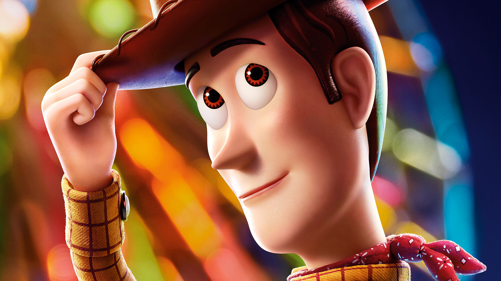
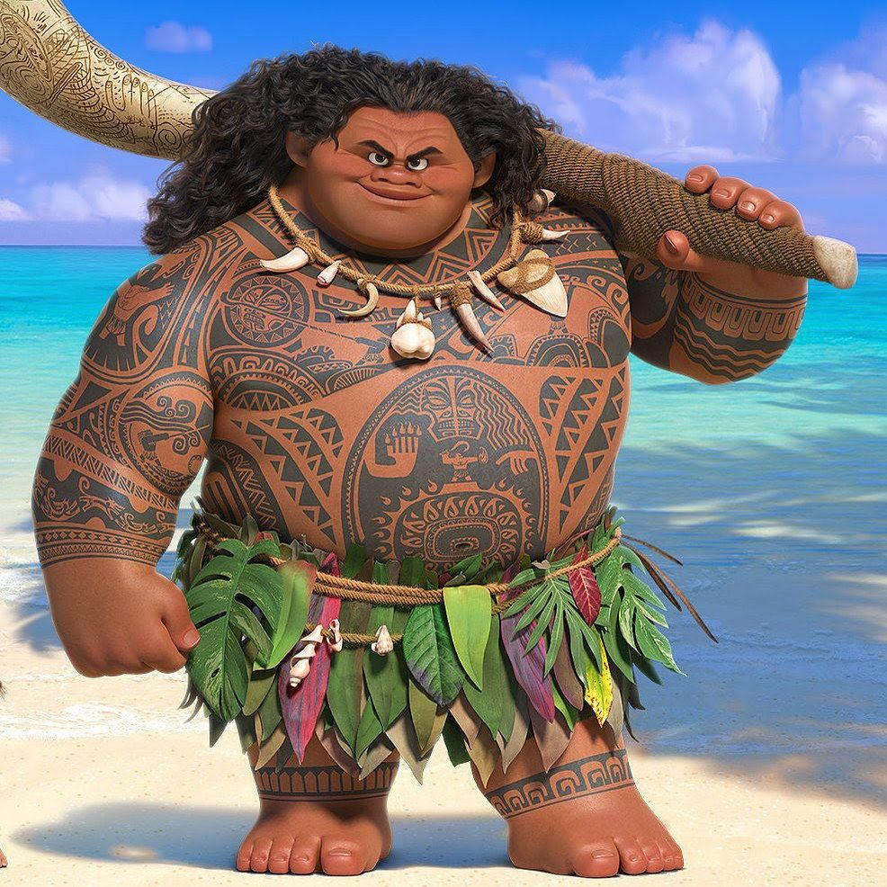

Mufasa nasceu o primeiro filho de Ahadi e Uru na Pedra do Rei, o irmão mais velho de Askari, e como herdeiro do trono da Pedra do Rei, enquanto seu irmão mais novo serviu como líder da Guarda do Leão. Quando os dois eram adolescentes, Askari retornou a Pedra do Rei após uma patrulha solo
Mufasa nasceu o primeiro filho de Ahadi e Uru na Pedra do Rei, o irmão mais velho de Askari, e como herdeiro do trono da Pedra do Rei, enquanto seu irmão mais novo serviu como líder da Guarda do Leão. Quando os dois eram adolescentes, Askari retornou a Pedra do Rei após uma patrulha solo
nspirações. Woody foi inspirado pelo brinquedo favorito do produtor executivo John Lasseter, um boneco puxa-corda que fala. A Pixar e o diretor Bud Luckey desenhou o personagem e surgiu a ideia de fazer dele um cowboy.
 Nemo é um pequeno e simpático peixe-palhaço, que repentinamente é sequestrado do coral onde vive por um mergulhador e passa a viver em um aquário. Longe de seu pai, que tanto o advertiu quanto aos perigos dos mares, Nemo constrói laços de amizade com seus companheiros de cativeiro.
Nemo é um pequeno e simpático peixe-palhaço, que repentinamente é sequestrado do coral onde vive por um mergulhador e passa a viver em um aquário. Longe de seu pai, que tanto o advertiu quanto aos perigos dos mares, Nemo constrói laços de amizade com seus companheiros de cativeiro.
brum urso pardo domesticado, que vive na pacata cidade de Timberline. Ele é a grande estrela dos shows ecológicos de sua cidade, sendo que à noite desfruta das acomodações da garagem de Beth.uma guarda florestal que o criou desde que era filhote. Porém nem todos gostam de Boog.

O Shrek original vive no pântano com seus pais. Ao atingir a maioridade, os pais decidem que é hora do ogro tomar um rumo na vida – e o expulsam de casa. Em sua caminhada, ele encontra uma bruxa que prediz seu futuro: Shrek irá encontrar um burro e, juntos, irão até um castelo salvar uma princesa
Sulley tem um talento especial para assustar sempre em concorrência com seu rival de trabalho Randall Boggs. O sucesso do primeiro filme permitiu a Pixar para fazer uma prequela, Universidade Monstros, que mostra Sulley como um estudante preguiçoso e arrogante se tornando rival e depois melhor amigo de Mike

Quanto ao desenvolvimento da história, a trama fala de Ben (um boi, mas com tetas de vaca, coisa meio estranha), líder dos animais de uma fazenda que tem sérias dificuldades em educar seu filho Otis (outro boi com tetas de vaca), um adolescente irresponsável que só pensa em se divertir

Maui é um ser humano, que foi abandonado por seus pais e criado pelos deuses. Devido a isto, ele acaba tendo que dividir sua vida entre os deuses e os humanos. Maui segue uma jornada com Moana, princesa da tribo Tui, para encontrar respostas sobre seu antepassado.
A Pantera Cor-de-Rosa é uma pantera fictícia que apareceu originalmente em 1963, na abertura do filme The Pink Panther. O sucesso foi enorme, o que levou à produção da série de desenho animado. Os mais de 120 episódios têm em média seis minutos de duração
Elsa de Arendelle é uma personagem fictícia do 53º filme de animação dos estúdios Walt Disney Pictures, Frozen. Elsa é inspirada na personagem-título de A Rainha da Neve, de Hans Christian Andersen. É dublada originalmente, na versão americana, pela atriz e cantora Idina Menzel
Bob Esponja foi criado pelo biólogo marinho e animador Stephen Hillenburg. Os primeiros rascunhos do desenho ele começou a fazer em 1984, quando dava aulas de biologia marinha no Instituto Ocean, na Califórnia. Mas os traços mais conhecidos do personagem principal, com a famosa calça quadrada
O Sr. Incrível é capaz de resistir a enormes quantidades de trauma físico e forças contundentes, incluindo quedas de vários andares, o impacto direto de um trem, rompendo paredes de tijolos e sobrevivendo a 100.000 volts de eletricidade sob tortura.